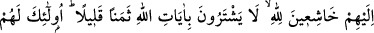

cennet köşkleriyle ilgilenmeksizin gözlerini Arş’a doğru açmış bir vaziyette görür.
Rıdvan’a “bu zâtın kim olduğunu” sorunca, şu cevâbı alır: “Bu, Allah’a iştiyâk duyarak
ölen Mârûf Kerhî’dir ki; Allah Teâlâ ona kendisine bakmayı mübah kılmıştır.”
İşte âriflerin bakmayı arzuladıkları şey, mânevî cennettir. Ki bu cennet, Allah’ı bilme
ve O’na ulaşma cennetidir. Bu öyle bir cennettir ki, Firdevs cennetinden hayırlı,
illiyyînden de yüksektir.
Öyleyse sâlikin, eceli gelmeden, ömrü tükenmeden, ölüm kendisini yakalamadan
cennete ulaşmaya ve oraya girmeye çalışması gerekir.
Ey Hâfız, huzûr istersen eğer olma Hak’tan gâfil!
Hoşlandığın birine rastlayınca bırak dünyayı şöyle çekil!
Allah Teâlâ, cümlemizi huzûruna ve yakîne ulaştırsın.
199. Ehl-i kitaptan öyleleri var ki; Allah’a, hem size indirilene, hem de
kendilerine indirilene tam bir samîmîyetle ve Allah’a boyun eğerek îman ederler.
Allah’ın âyetlerini az bir paraya satmazlar. İşte onlar için Rableri katında ecirleri
vardır. Şüphesiz Allah, hesabı çabuk olandır.
Bu âyet-i kerîme, Abdullah b. Selam (r.a.) ve arkadaşları hakkında nâzil olmuştur.
Hıristiyan iken müslüman olan kırk Necrânlı; iki Habeş ve sekiz Rum hakkında nâzil
olduğu, ayrıca Habeşistan necâşisi Ashame hakkında nâzil olduğu da söylenmektedir.
Zira Ashame öldüğünde Cibrîl, ölüm haberini Hz. Peygamber (s.a.)’e öldüğü gün
getirmişti. Hz. Peygamber de arkadaşlarına: “Çıkın, memleketiniz dışında ölmüş
bulunan bir kardeşinizin namazını kılın!” buyurunca ashâb-ı kirâm: “Kimdir o?” diye
sormuş Efendimiz cevaben “Necâşî” buyurmuştu. Sonra Bakî mezarlığına gelen Hz.
Peygamber’e Habeşistan’a kadar olan bölge gösterilmiş o da Necâşî’nin yatağını
görerek namaz kılmış dört tekbir getirmiş ve onun bağışlanmasını dilemişti. Bunun
üzerine münâfıklar: “Şuna bakın hiç görmediği, kendi dîninden de olmayan hıristiyan bir
Habeş kâfirinin namazını kılıyor!” demişlerdi.[184] İşte bu âyet-i celîleyi, Cenâb-ı Hak,
münâfıkların bu sözü üzerine inzal etmiştir.
Kitap ehlinden öyleleri var ki, Allah’dan korkarak, O’nun azabından çekinip sevabını
ümit ederek “Allah’a inanırlar. Size indirilen” Kur’ân-ı Kerîm’e de “kendilerine
indirilen” Tevrat ve İncil’e de “inanırlar. Allah’ın” Tevrat ve İncil’deki, Hz.
Peygamber’in özelliklerini belirten “âyetlerini az bir paraya satmazlar.” Bu âyetler